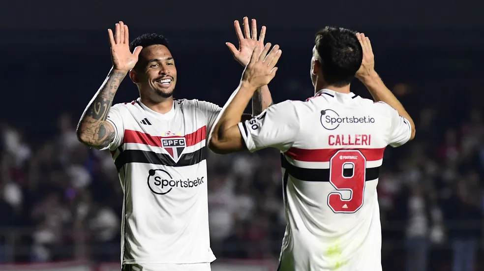

Futebol Masculino
São Paulo é derrotado em Choque-Rei pelo Campeonato Brasileiro
Calleri pode se tornar o segundo maior artilheiro estrangeiro da historia do São Paulo
Artilheiros e solidários: Calleri e Luciano crescem com Dorival no São Paulo e têm números idênticos

Pato Está indo muito nos treinos e a sua reestreia está mais proxima
Futebol Feminino
Tricolor fez 3 a 0 no Rio Grande do Sul e se classificou com a sétima melhor campanha.
São Paulo recebe o Santos pelo Paulista Feminino Sub-17
São Paulo atropela o SKA e entra no G4 do Paulista feminino
Formiga faz seu primeiro gol após o retorno, e São Paulo Goleia no Paulista Feminino
Categorias de base
São Paulo Sub-20 Classificado como lider do grupo e encara o Nacional pelo Campeonato Paulista
Pelo Paulista, Sub-15 e Sub-17 empatam em Ribeirão Preto
De virada, Sub-20 Vence o Rd Bull Bragantino
Com Novos treinadores, Sub-20, Sub-17 e Sub-15 começam a 2ª fase do paulista
Basquete Tricolor
São Paulo se prepara para o ultimo jogo contra o time de Franca
Basquete Tricolor se prepara para disputar a LDB
Basquete Tricolor e vice-campeão da NBB
COLEÇÃO DE TROFÉUS TRICOLOR
Clique na imagem para saber mais